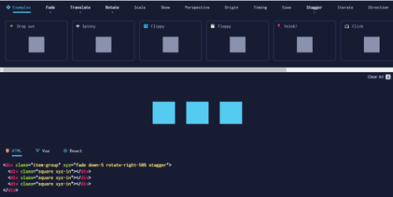
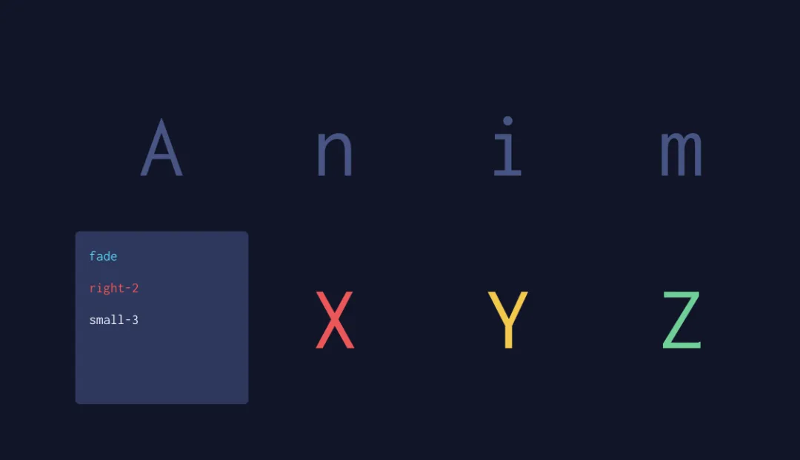
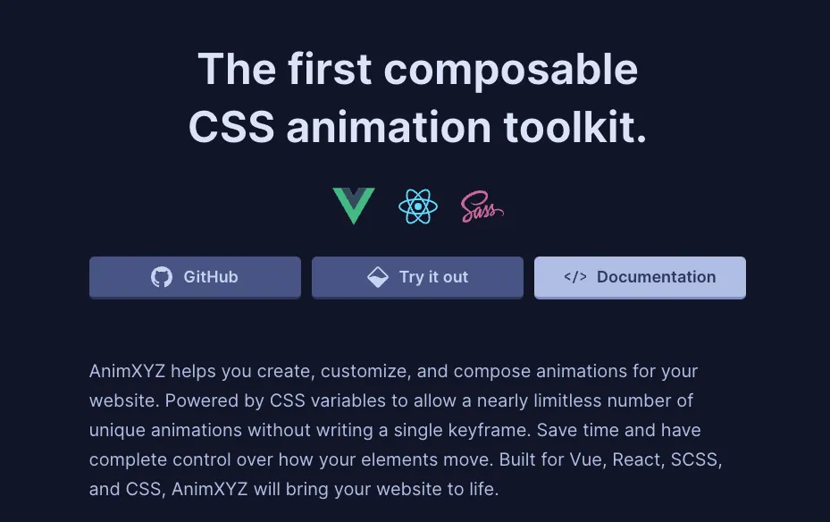

今天，我们为大家介绍一款强大的 CSS 动画库——AnimXYZ，它能够帮助开发者轻松创建、定制和组合动画效果，而无需编写任何关键帧代码。
什么是 AnimXYZ？
AnimXYZ 是一个基于 CSS 的动画工具库，专注于为网站提供灵活、高效的动画解决方案。
通过 CSS 变量的使用，AnimXYZ 能够实现几乎无限的动画效果，极大地简化了开发流程。它支持 Vue、React、SCSS 和纯 CSS，适用于各种前端项目。
1. 组合性
AnimXYZ 的最大特点是其强大的组合性。开发者可以通过简单的类名组合来创建复杂的动画效果。例如，将渐隐（fade）、缩放（small）和从顶部掉落（up）组合起来，只需在元素标签上添加 xyz="fade small up" 即可。这种直观的命名方式使得动画的创建变得异常简单。
2. 高度定制化
通过 CSS 变量，开发者可以轻松调整动画的各项参数，如延迟、持续时间、迭代次数等。例如，可以通过 --xyz-translate-y: 42%; 来调整动画的位移距离。这种高度的定制化能力使得 AnimXYZ 能够满足各种复杂的动画需求。
3. 即插即用
AnimXYZ 不仅支持纯 HTML 和 CSS 项目，还提供了与 Vue 和 React 的集成组件，使得在现代前端框架中使用动画变得更加便捷。无论是通过 npm 安装，还是通过 CDN 引入，AnimXYZ 都能轻松集成到你的项目中。
4. 嵌套与交错
AnimXYZ 支持嵌套动画和交错动画，开发者可以轻松实现元素列表的正序和倒序交错效果，同时与父级元素的动画同步。这种功能在制作复杂的动画场景时非常有用。
5. 高性能
AnimXYZ 的性能表现非常出色。基础功能仅需 2.68kB，包含实用工具时为 11.4kB。它通过硬件加速策略和动态负载均衡，确保动画的流畅性和高效性。
6. 代码量少
使用 AnimXYZ，开发者无需为每个动画需求编写自定义关键帧。通过简单的类名和属性配置，即可实现复杂的动画效果，大大减少了开发时间和代码量。
安装与使用
AnimXYZ 不仅支持纯 HTML 和 CSS 项目，还提供了与 Vue 和 React 的集成组件
- HTML 集成方法
<link rel="stylesheet" href="https://cdn.jsdelivr.net/npm/@animxyz/core" />
- Vue 安装
# Vue2.x 安装
npm install @animxyz/vue
# Vue3.x 安装
npm install @animxyz/vue3
- React 安装
npm install @animxyz/react
更多超酷的动画案例，请移步：https://animxyz.com/docs
实用工具
- AnimXYZ 还提供了多种实用工具，如：
- xyz-none：禁用元素的动画。
- xyz-none-all：禁用元素及其子元素的动画。
- xyz-absolute：在动画期间将元素设置为绝对定位。
- xyz-paused：暂停元素的动画。
- xyz-paused-all：暂停元素及其子元素的动画。
AnimXYZ 通过其强大的功能和灵活的定制能力，为开发者提供了一个高效、便捷的动画解决方案。无论你是前端新手还是资深开发者，AnimXYZ 都能帮助你轻松实现各种复杂的动画效果，为你的网站增添更多活力。
- GitHub 地址：
https://github.com/ingram-projects/animxyz - 官方文档：
https://animxyz.com/